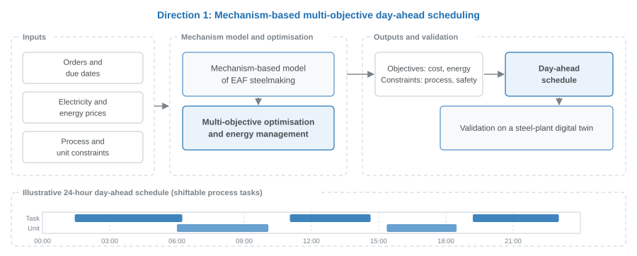

Research
My research connects industrial processes with low-carbon power systems, from long-term transition planning and short-term production scheduling to grid flexibility services. Electrified and hydrogen-based steelmaking are central applications.
Research themes
Low-carbon transition planning
Link long-term investment with short-term operation to assess feasible steelmaking transition pathways under cost, emissions and regional energy constraints.
Steelmaking process scheduling
Use resource–task networks and multi-objective optimisation to coordinate electric arc furnaces, electrolysis, hydrogen storage and renewables under production constraints.
Industrial flexibility and multi-energy coordination
Assess industrial load and hybrid storage flexibility for demand response, energy management and grid flexibility services.
Explore the research framework and theme diagrams




Selected studies
Each study starts with its question and approach. Expand for the existing case-study results and figures; reported gains depend on the equipment configuration and comparison baseline.
Low-carbon steelmaking transition planning
How should investment cost and decarbonisation be balanced? Annual investment and representative hourly operation are co-optimised to compare EAF-only and EAF+DRI pathways.
Case-study results and figures
Annual investment decisions and representative hourly operation are co-optimised under regional energy constraints, with a GDP formulation linking investment and operation and joint clustering yielding eight representative scenarios. Pathway choice balances cost against emissions: relative to the EAF-only route, EAF+DRI raises the discounted total cost by 18.1% while cutting cumulative operational emissions by 41.0%. A further 30% reduction in hydrogen prices from 2033 advances full-H2 adoption from 2048 to 2040.


Multi-objective EAF scheduling
How can production time, electricity cost and indirect emissions be balanced? An extended RTN and multi-objective optimisation assess scheduling with renewable generation and battery storage.
Su P, Zhou Y*, Wu J. Multi-objective scheduling of a steelmaking plant integrated with renewable energy sources and energy storage systems: Balancing costs, emissions and make-span. Journal of Cleaner Production, 2023, 428: 139350. DOI ↗
Case-study results and figures
An extended resource–task network (RTN) is built for the EAF–AOD–LF–CC route, integrating production, electricity-use and indirect-emission constraints, and a normal boundary intersection (NBI) method generates the cost–makespan Pareto set. In a case with 10 MW PV, 10 MW wind and 5 MW / 20 MWh battery storage, a 1430 min joint schedule reduces electricity and emission costs by 68.5% and indirect emissions by 83.5% relative to a fixed 785 min schedule. Longer makespans unlock flexibility, and storage reduces costs further.


Hydrogen-based steelmaking coordination
How can operating economics improve with existing equipment? Separate RTN models of electrolysis, hydrogen storage, direct reduction and EAF operation are integrated through boundary dependency constraints.
Su P, Zhou Y*, Li H, Perez HD, Wu J. Cost-effective scheduling of a hydrogen-based iron and steel plant powered by a grid-assisted renewable energy system. Applied Energy, 2025, 384: 125412. DOI ↗
Case-study results and figures
Electrolysis, hydrogen storage, direct reduction and EAF operations are modelled together, with RTN and boundary-dependence constraints ensuring the feasibility of a six-batch production schedule. Electrolyser power adjustment complements EAF batch shifting, while the hydrogen tank buffers day-ahead price and wind variability. Under the cost-minimising schedule, total operating cost falls from 533.8 k£ to 221.1 k£ (58.58%), including power purchases, curtailment penalties and indirect emissions.


System context: energy and material flows

Research Projects
SUSTAIN Manufacturing Hub
Funded by the UK Engineering and Physical Sciences Research Council. Led Sub-project 1, “Mechanism-based multi-objective day-ahead scheduling optimisation for steel plants”, developed energy management algorithms for electric arc furnace steelmaking and supported their deployment on a steel plant digital-twin testbed. Related work received the Best Poster Award at the project annual conference.
FlexCHESS · Flexibility Services from Interconnected Hybrid Energy Storage Systems
Studied hybrid energy storage systems that combine industrial process flexibility with storage, and their application to grid flexibility services. Results were presented orally at IEEE PES ISGT Europe and IEEE EI². Project link
MC2 · District-level Coordinated Control of Cyber-Physical Urban Energy Systems
Responsible for assessing industrial load flexibility and its potential to provide demand response services. Developed a digital-twin method for intelligent, flexible steel plant operation in collaboration with SUSTAIN. Project link
Methods
- Resource–task networks (RTN) and process-constraint modelling
- Multi-objective optimisation and mixed-integer linear programming (MILP)
- Industrial flexibility assessment and demand response
- Energy management, hybrid storage and digital twins